TurboSquid
935 Gravier Street, Suite 1600
New Orleans, LA, 70112
| 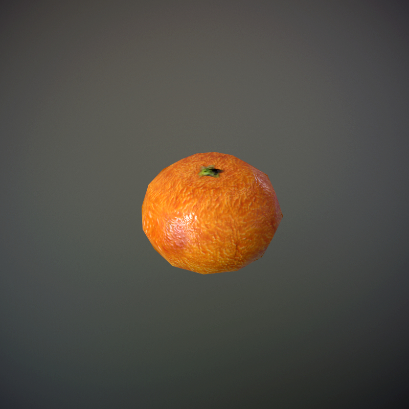 |
THE ANGULAR ORANGE
rough along the edges, with a beautiful matisse-esque brush stroke texture... |
free |
| 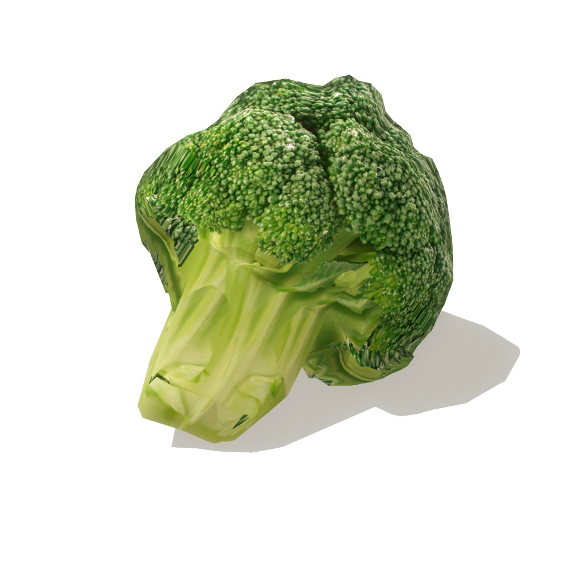 |
FLIRTIOUSLY FROZEN FLORET
Match made in heaven for your jolly green giant ;-) |
2.5 |
| 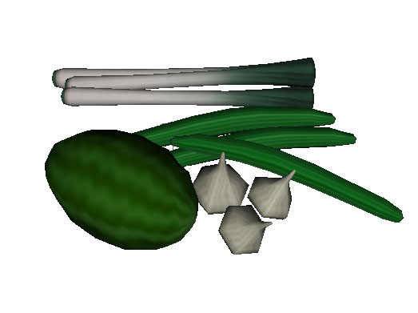 |
ASSORTED GREENS
A watermelon, some leeks, tender garlic bulbs and slender cucumbers walk into your mouth, wyd? |
2 |
| 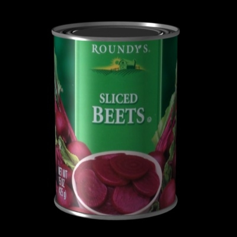 |
ROUNDY'S CAN -O- BEETS
the fresh taste of juicy dirt, can u feel ur heart beat ? |
3 |
| 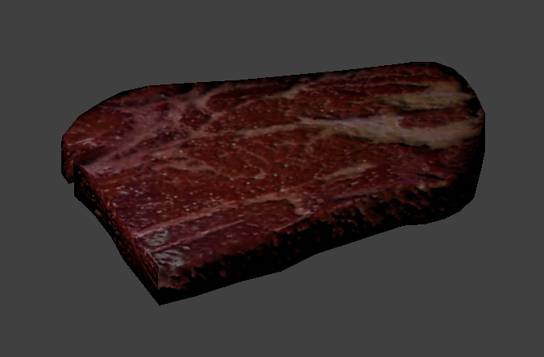 |
MEAT WAD
I need a himbo, I'm holding on for a himbo till the end of the night... | priceless |
| 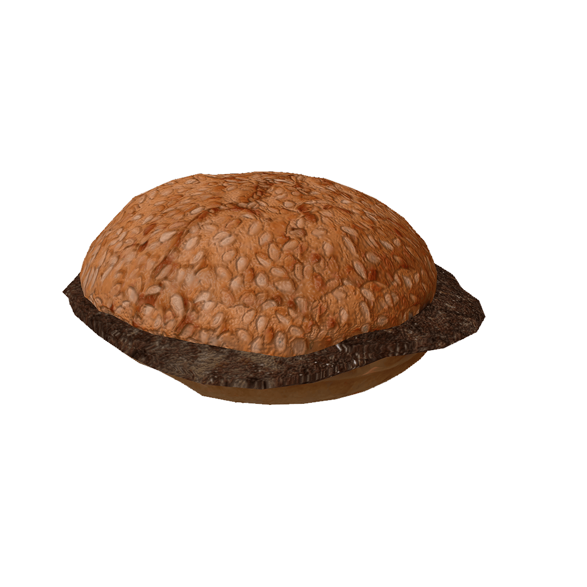 |
THE DESERT BUN & BURGER
Incredibly dry, just like all this humor. |
40 |
| 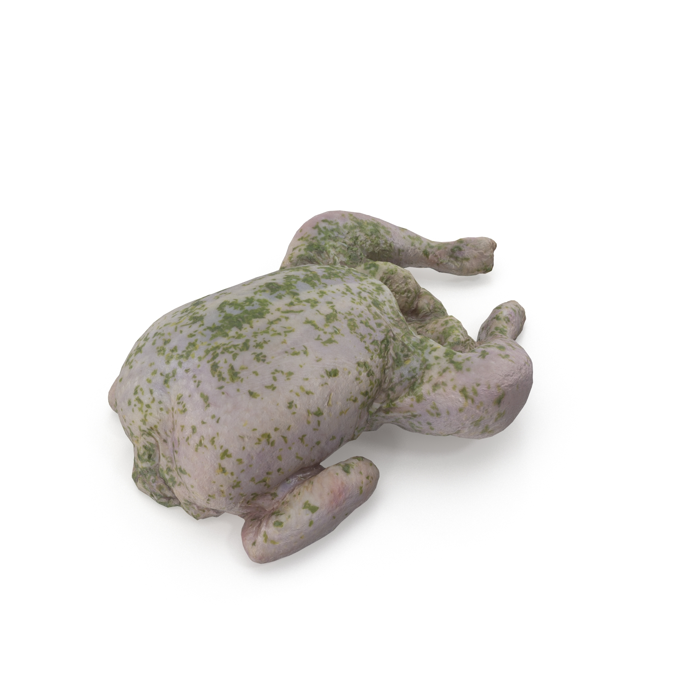 |
RAW CHICKEN WITH SAGE
It's not mold, it's actually sage... or is it....¯\_(ツ)_/¯ |
22 |
| 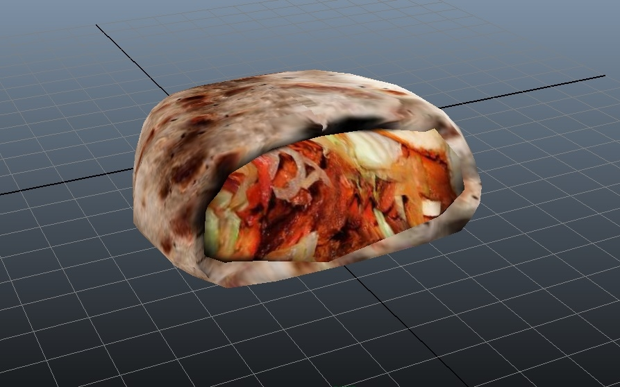 |
KEBUB
This kebab bub comes on a nice 3D plane! |
8 |
| 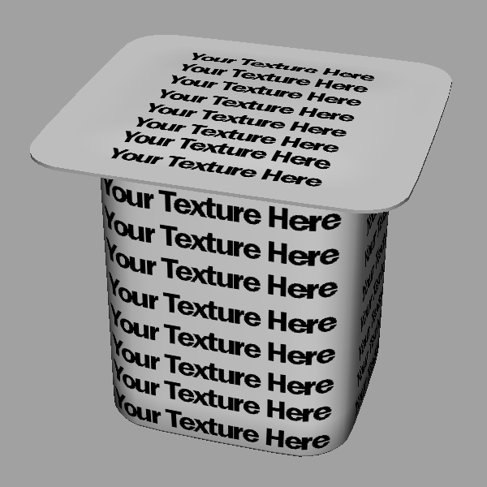 |
DIY CUSTOM YOGURT CUP
for those trying to watch their figure, we are raving about this cream dream till the cows come home! |
5 |
| 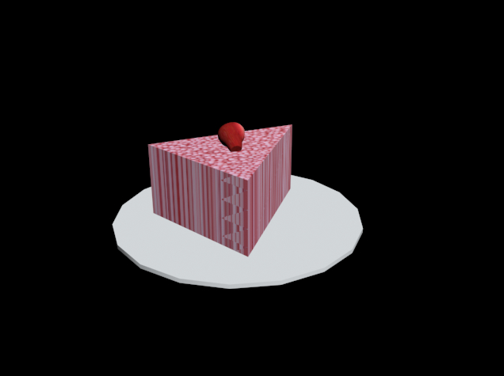 |
MANIC PIXEL GLITTER CAKE
She wears Doc Martens and loves the Fall. |
3 |
| 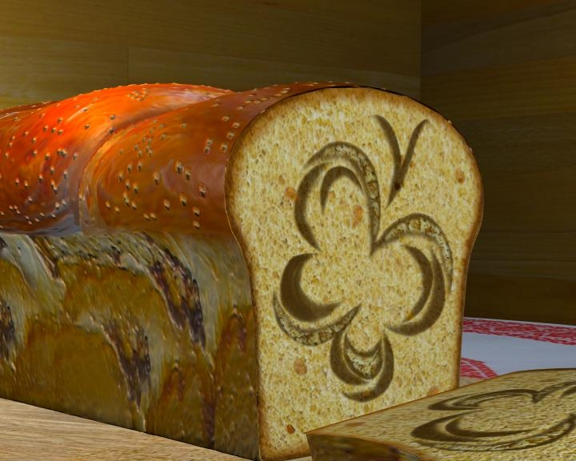 |
BUTTERFLY BREAD
Cinnamon swirly butter dreams. |
butt |
| 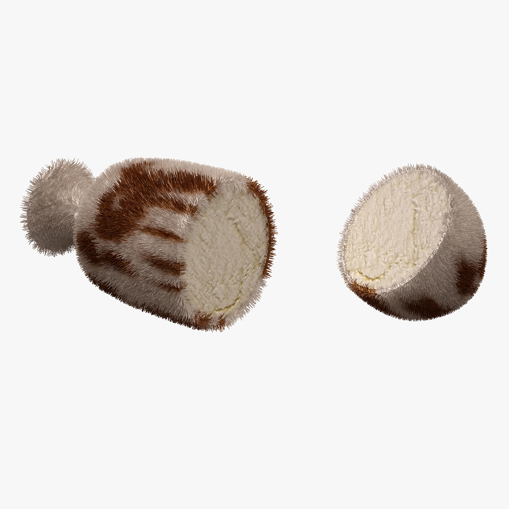 | AGED CHEESE
This cheese has a sophistocated ponytail and loves reading Marx. |
5 bitcoin |
Once when I was younger my mother told me she almost loved me more than she loved bread.
She shook her hips back and forth with her eyes closed as she sang about bread and her love for it.
She said she'd much rather have a piece of bread than a piece of cake.
Wine is a truth serum, but also teenagers are so annoying.
Here are some things that I love more than bread though: